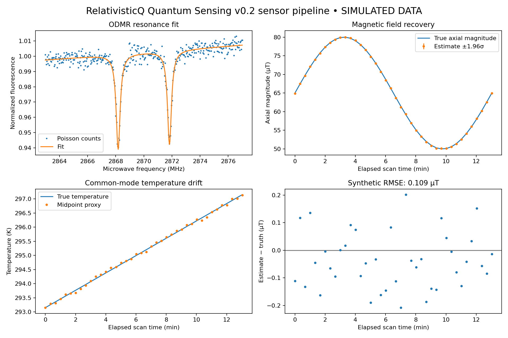

Simulated axial NV magnetometry. No hardware or navigation accuracy claim.

{
"scope": "Synthetic axial ODMR; not hardware or navigation validation",
"seed": 17,
"scans": 40,
"accepted_scans": 40,
"rmse_ut": 0.10877845736832005,
"max_abs_error_ut": 0.20842515506632253,
"approx_95pct_interval_coverage": 1.0,
"median_fit_latency_ms": 165.45873750004603,
"scan_duration_s": 20.05,
"config": {
"linewidth_mhz": 0.35,
"contrast": 0.06,
"photon_rate_per_s": 2000000.0,
"dwell_s": 0.05,
"strain_mhz": 0.15,
"baseline_slope": 0.01
}
}